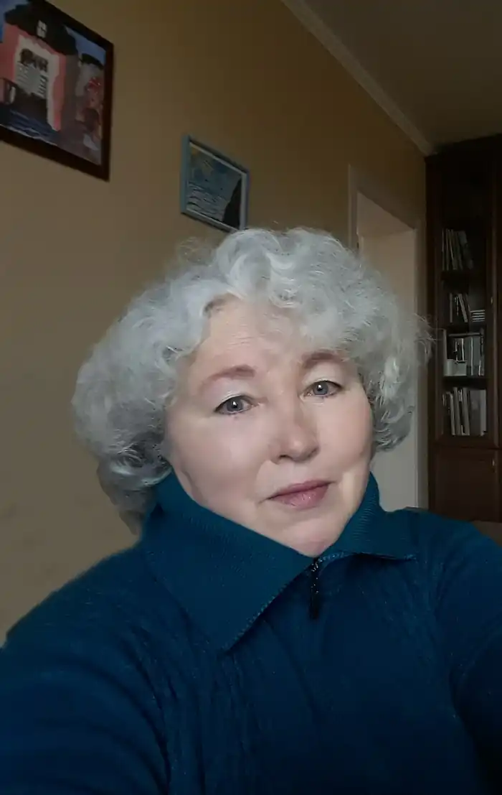

Важко написати про себе в декількох реченнях. Набагато легше – в декількох словах: народився, вчився, працював, оженився (вийшла заміж), або вже цілу оповідь…
Коли у 1963 році ми з бабулею мали переїздити з Росії до Києва, де на нас чекали мама та вітчим-війсковий, далекий родич – п'яничка й недоріка, єхидно так казав: "Что, к хахлам едете?".
Тоді мені було вісім, і ці його слова я згадала геть пізніше – коли палав Майдан, а я з малесенькою онукою не відходила від телевізора й чорні шини диміли в душі; коли в серце стукав попіл спаленого будинку профсоюзів (на його місці був колись будинок вчителя, в якому ми, десятикласники, грали сцени з п'єси Горбатова "Юность отцов"); коли на фронті гинули наші хлопці, а я в цей час марно шукала на "однокласниковій" сторінці моєї пітерської двоюрідної сестри хоч якусь згадку про війну – самі котики, собачки та ангелочки. Мене віддали в київську школу, директор якої на прохання батьків звільнити мене від вивчення української (мовляв, самі мови не знаємо, допомогти не зможемо, до того ж, може треба буде ще кудись переїжджати) сказав: "Хай вчить. Я знаю українську, російську, польську, німецьку, і це мені ніколи не заважало". Розумна була людина, дякую йому щиро. Після закінчення школи подружка запросила мене до "Млина", що в Гідропарку (певна річ, вдень) відсвяткувати її майбутнє весілля. Чомусь ми вирішили перейти там на українську. Яка тоді в нас була мова, навіть згадувати соромно, але люди за сусідніми столиками перешіптувались: "Дівчата, мабуть, з заходу приїхали...". Дійсно, у Києві тоді, у 1974-му, і до того, і по тому, почути українську мову було майже неможливо, хіба що грубий суржик, яким псували солов'їну ті вихідці з села, які хотіли бути "наче гарадскіє". А вчителя попереджали: не ходіть в улюблений парк Шевченка, що поруч зі школою "в определенные дни, которые используют националисты". Таких було два: день народження Поета і день його перепоховання. Все українське давилося в зародку, і більшості було байдуже. Книги я любила з дитинства, не уявляла без них життя і мріяла мати власну, хоча б невелику бібліотеку. Читала переважно російською і все підряд. Поети "срібного віку" були моїми улюбленцями. Пізніше, познайомившись із своїм майбутнім чоловіком, а через нього з книжками, які він відшукував у букіністах, рідше – у книжкових магазинах, я стала більше читати українською. Це були здебільшого переклади американських та європейських письменників, які, на наше щастя, видавали "Дніпро" та "Радянський письменник", і якими я із задоволенням ділюся нині з вами. Вони відкрили мені світ. За освітою я картограф і тому, закінчивши школу, протягом п'ятнадцяти років мандрувала країною "пташиним летом", мріючи хоч колись побувати в тих місцях, які відображала на картах. Мрії мають дивну особливість: вони збуваються, просто інколи ми їх не впізнаємо. Дійсно, мені було важко провести паралелі між старими кресленнями України і місцями, баченими під час численних подорожей найвіддаленішими її куточками, які ми згодом влаштовували з чоловіком кожного літа. Так я не тільки пізнала свою країну, а й полюбила її. Почати розмовляти українською було важко. Тут у пригоді сталася… трирічна онука, яка, дивлячись мультики про Міккі-Мауса з нашим перекладом, миттєво перейшла на мову. Так ця вухаста американська потворка (ох, знов ці американці!) посприяла розповсюдженню української мови в нашій сім'ї☺. Замолоду мріяла стати перекладачем чи працювати у якомусь виданні… Підзабуті мрії знову збулися, хоча й трохи перекручені. Була оператором з набору тексту в "Посреднике" (існувала така газета під час перебудови), редактором у відомчому економічному журналі, навіть корегувала журнал "Книголюб", який, на жаль, проіснував недовго. Наразі на пенсії. Намагаюся ділитися книжками і разом з онукою вигадую казки. Дуже часто запитую себе: чому мені, народженій у Ленінграді (батьки – росіяни, ну може трохи прибалтійської крові; бабуся з ільменських словен (Старая Русса)), болить за мову більш, ніж деяким в Україні? Вам пощастило мати корені. Мої залишилися десь далеко. Україна стала моєю Батьківщиною. Я живу на цій прекрасній землі, люблю її, знаю країну та її історію, і мені дуже прикро, що дехто цурається своєї так тяжко виплеканої ідентичності. Не будьте, як усі! Будьте українцями й пишайтесь цим!!!